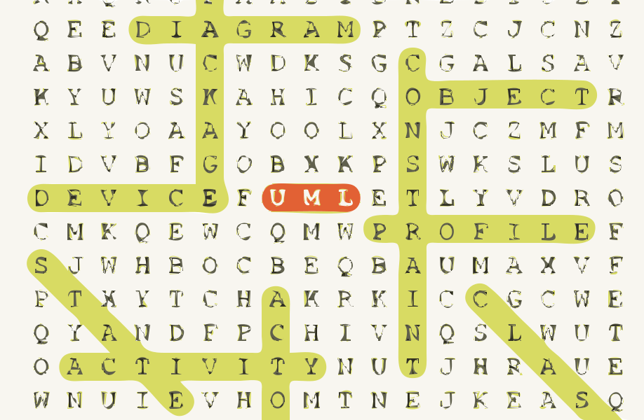

Welcome to the Word Scramble Game!
History:
"The origins of the word scramble phenomenon are oral. The interweaving of languages, dialects and sounds have contributed to change over time not only words but also expressions.
Word scramble are also the basis (with varying degrees of success) for many exchanges or secret codes that can hide information from the uninformed reader. In our contemporary times the written principle of the mixed words has a playful and hobby character*.*
The word scramble, also known as “word search” or “secret word search”, has become a major success among both amateur readers and experienced cruciverbists.
Word scramble is also widely used as an educational tool and basis of exercises in school teaching for word learning and reading.
The word scramble is offered in many forms, in the written press in the form of a grid to cross but also in the form of a game of letters either traditional, electronic or online via internet."
Source : Word scramble history according to Wikipedia
Principle:
The principle of the game is to locate, in a grid filled with letters, words known from the dictionary, read in both directions, horizontally, vertically and diagonally.
Unlike crosswords, the absence of black boxes offers players many complexities and intersections.
Game unfolding:
The player can first choose to create a new game, or to resume one in progress.
In the first case, the player will be asked to name the game, the first player and finally the second player.
In the second case, the game will resume with its former attributes.
The game is based on turn-by-turn. Players compete on grids of five different difficulty levels. The size of the grid increases, as does the number of words and directions. The game ends after both players have played on the fifth round grid.
The winner is defined by the score obtained by each player.
The game is playable with an English and French dictionary available in the options menu.
Example:
